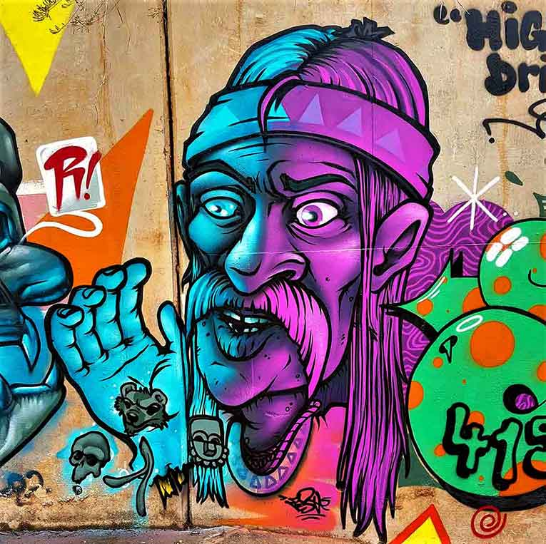
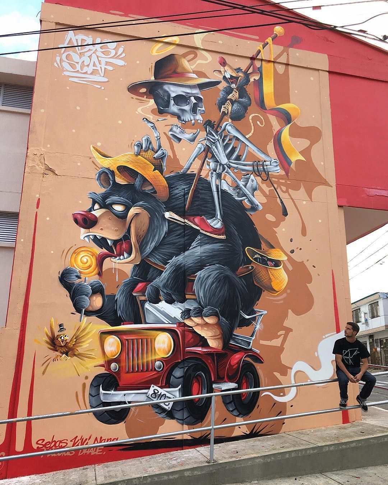
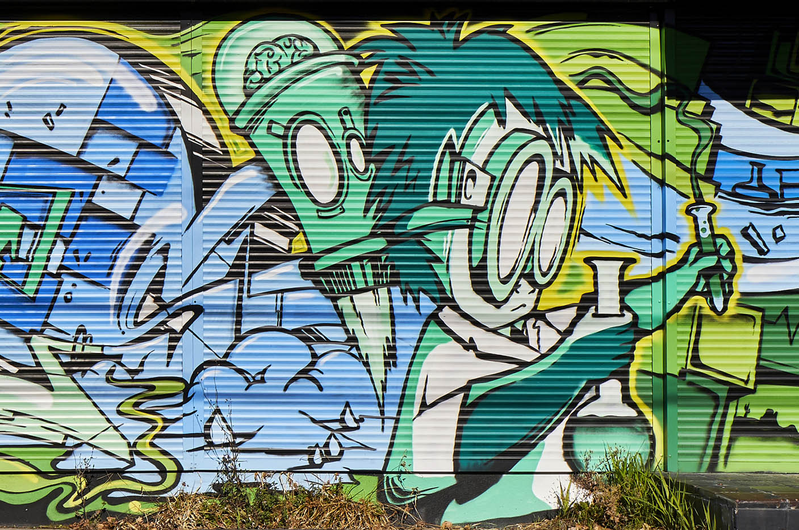
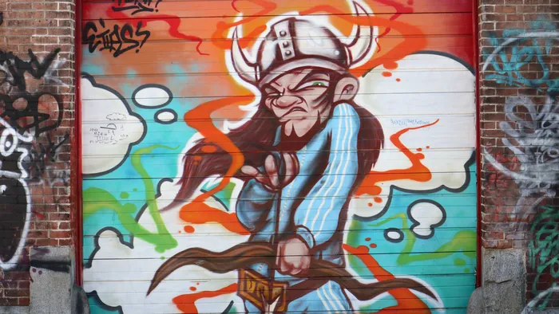
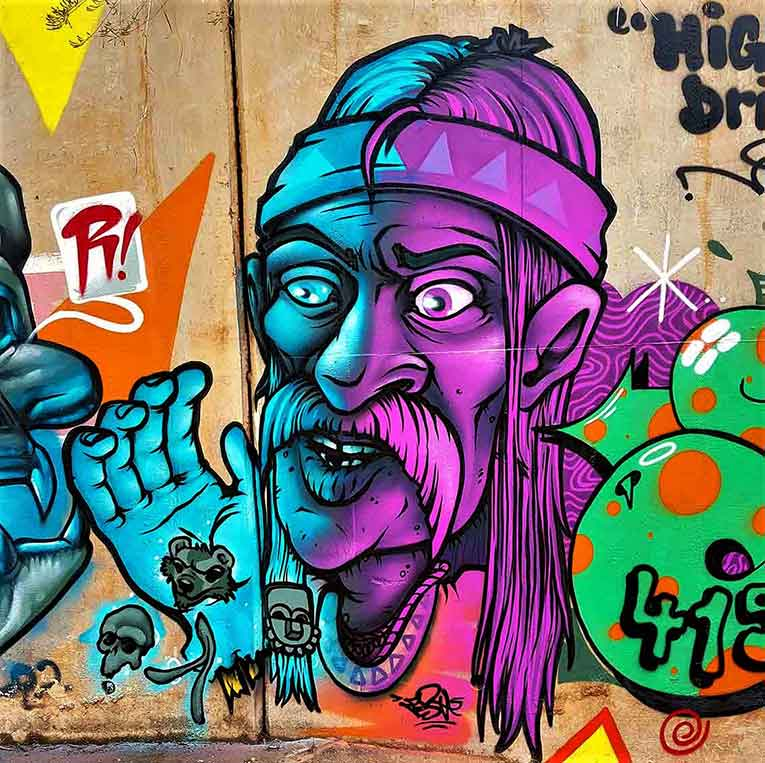
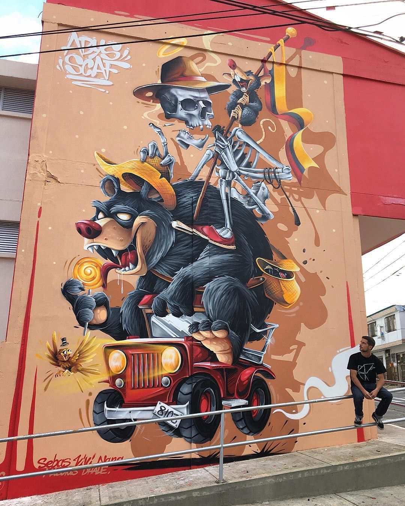
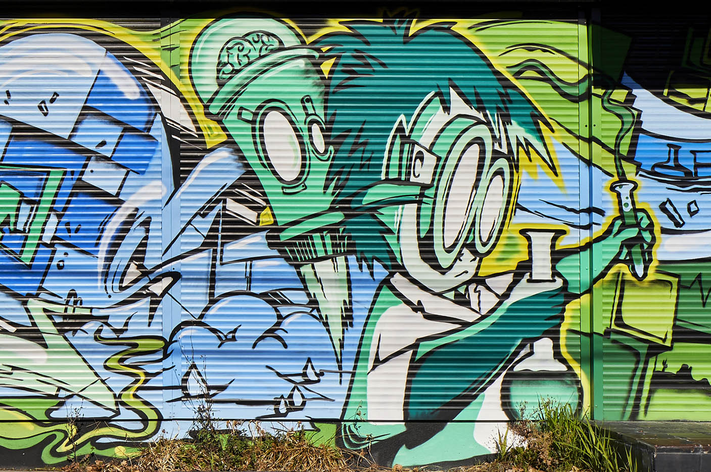
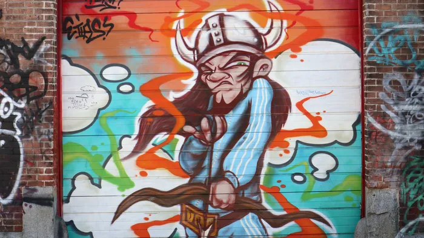

es una abreviatura de "personaje de dibujos animados". Por lo general, se pintan junto a un graffiti para crear un escenario alrededor de la pieza de graffiti. Aun así, algunos artistas deciden centrarse solo en los personajes.
En el graffiti se ve a los characteres o personajes como algo que solo acompaña al graffiti, sin embargo los characteres son un mundo aparte en mi humilde opinion ya que estos cuentan con su propio metodo de realización :
 






